Performance Evaluation
This Module works on both community and enterprise editions
This module allows you to appraise employees in your organization in an effective and simple way. You can design pre-defined templates for key performance areas (KPAs) as well as competencies, and you can link it to job positions. that means you no longer need to define targets for individual employees but rather for large group of employees, the appraisal will be sent to the employee first for self-evaluation and then to the manager for final evaluation.
Template configuration
Key Performance Template:
In this configuration form, you will be able to create a key performance template to be used across the company,
these are the key performance areas that are grouped by category, for example Skills, quality of work, technical objectives…etc.
:
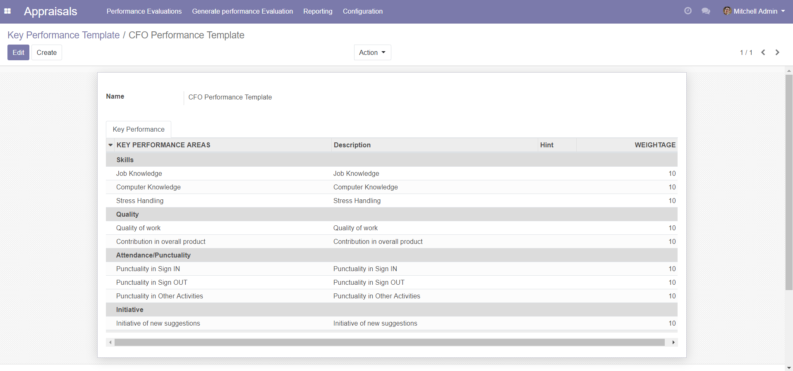
Competencies Template:
In this configuration form you can create competencies to
be used for evaluating employees key competency areas, for example: Planning and organization, Leadership and others.:
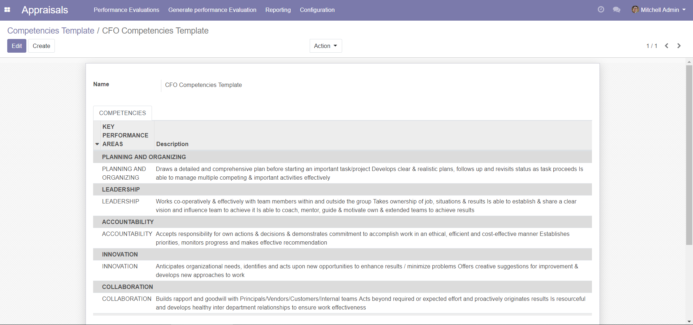
Job position:
In the job position record, you can link it with the performance template and competencies template,
that means all employees of a specific job position will receive the same evaluation forms.
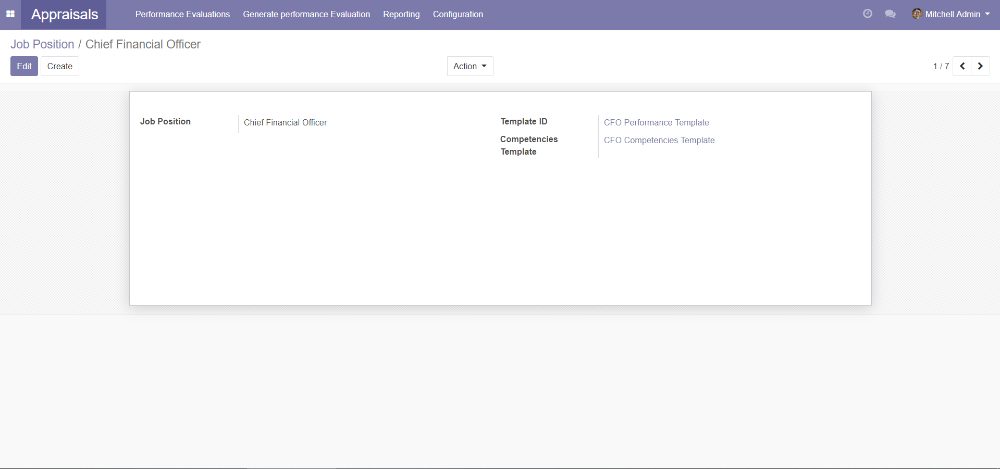
The Work Flow:
Create a new evaluation form like below, and select the employee, once the employee is selected the corresponding templates
will be automatically pulled out based on job position, fill in the details such as period and deadline. After that click Send to Employee.
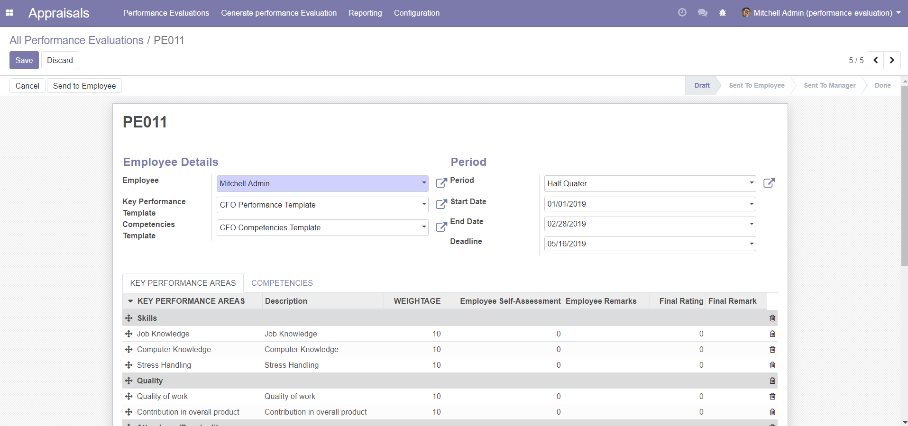
Create a portal user to the employee, after he/she logs in to the front end, the below will show.
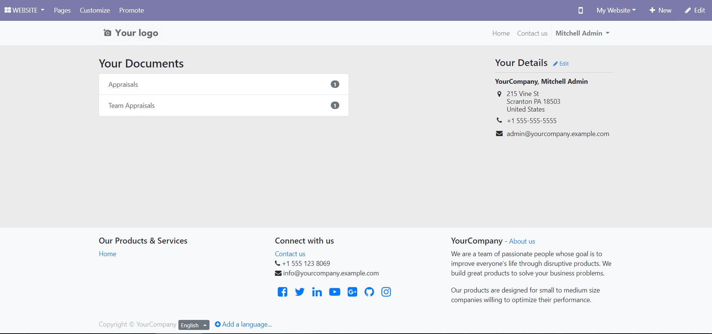
click on appraisals to see your own appraisals, and on team appraisals to appraise your team.
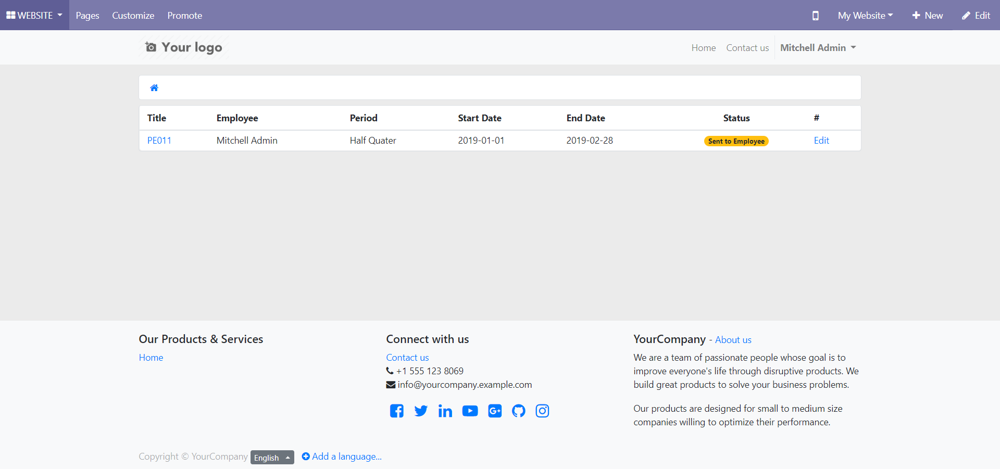
By clicking the edit button he can edit and submit the self-assessment rating and remarks.
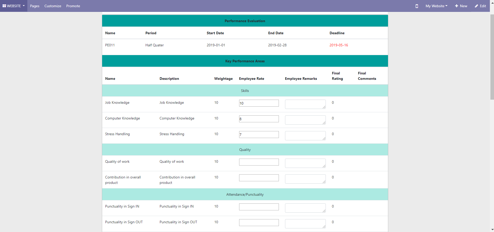
the employee can not edit the manager rating nor competencies records(only manager can do that).:
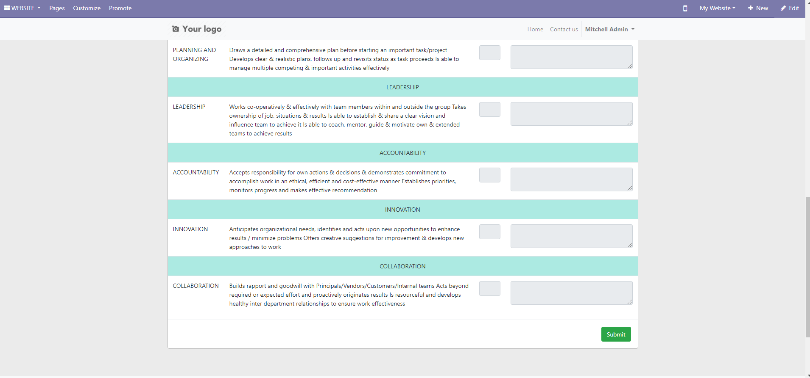
Fill in self-review form and click on submit.
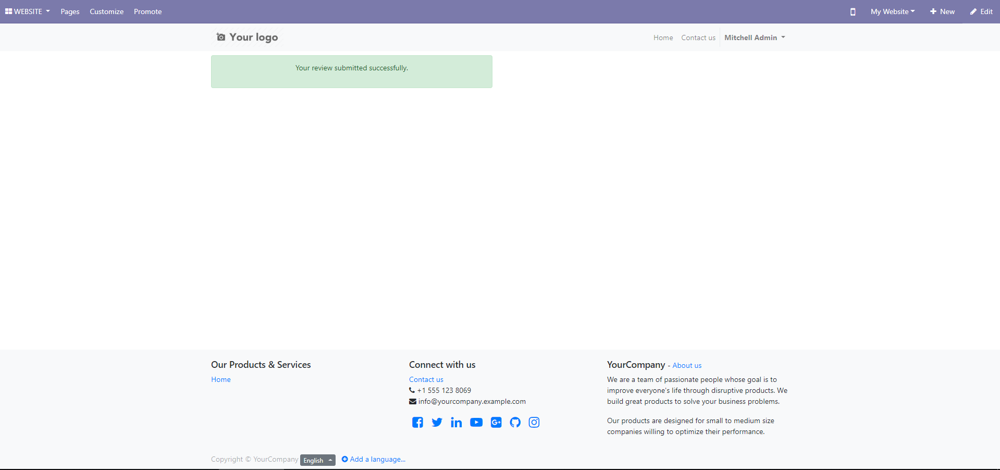
Now that we captured the employee self rating, the data will be
viewable to the HR manager at the backend, the HR manager can click on send to manager to request the manager’s review.:
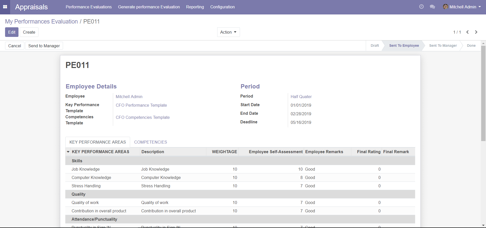
After sending to the manager, manager can able to see all
of his team records under the name of Team performance evaluation menu, and portal also:
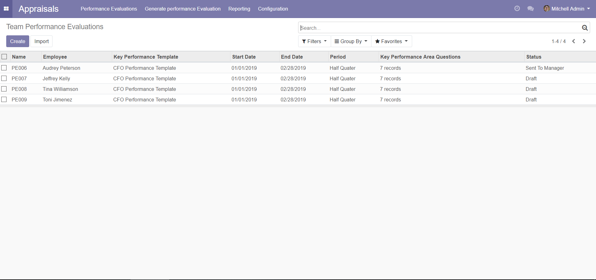
Manager is allowed to edit the manager rating and manager remarks columns only; Manager can not change employee filled values.:
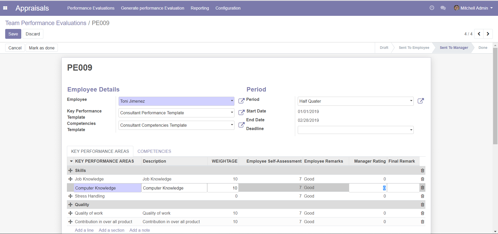
From the website manager can fill his team member’s appraisals,
manager can see the edit button only if the form was in "send to manager" state.
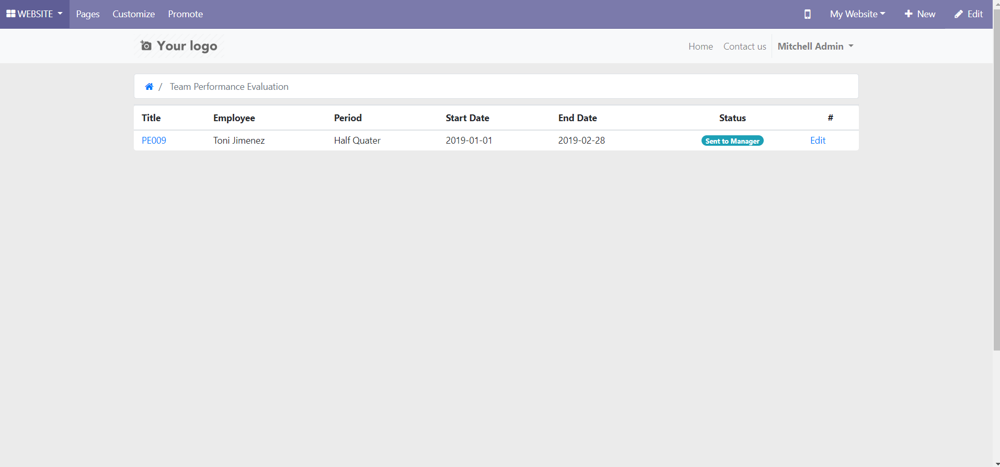
by clicking that edit button, manager can fill his team members remarks and competencies:
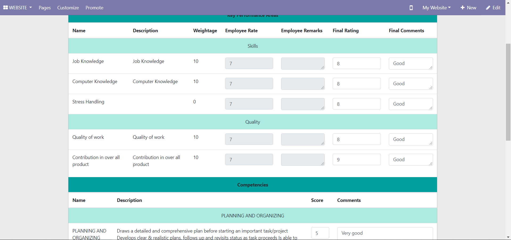
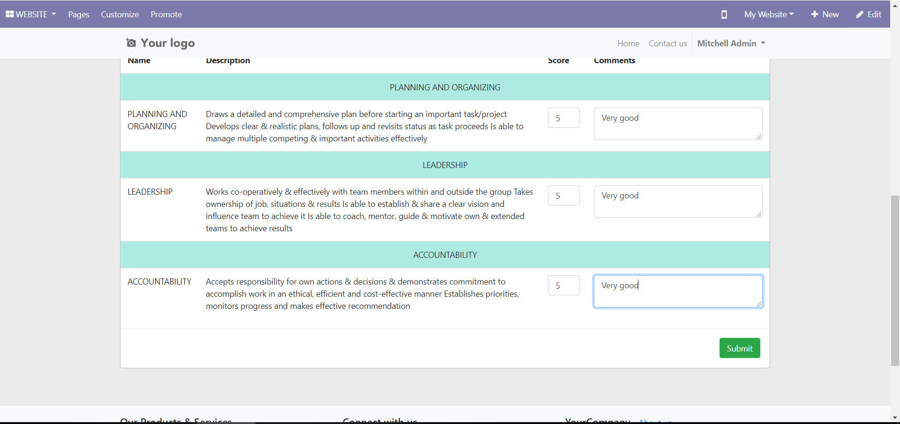
After clicking the submit button you will receive
message like below, and the manager rating will store in the corresponding record.
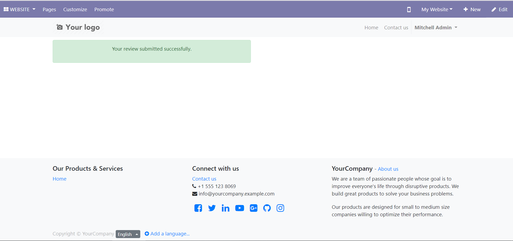
Then HR Manager can move this to done state by clicking mark as done button:
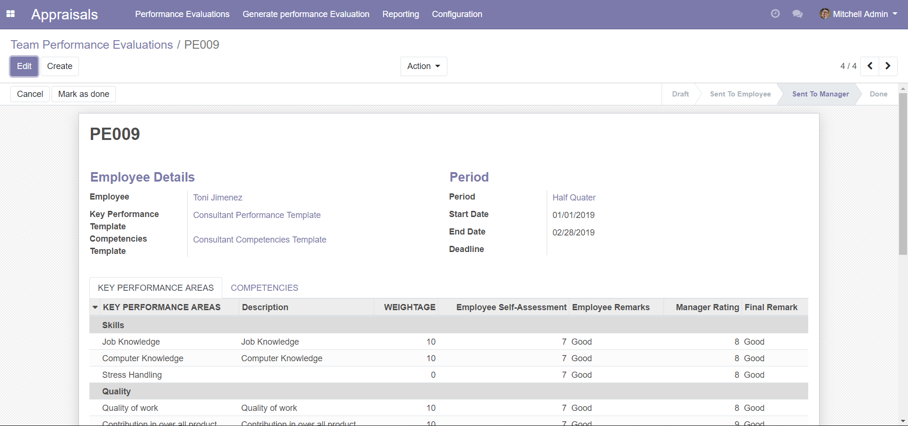
After done stage no one can not edit the record. All data will go to read-only mode:
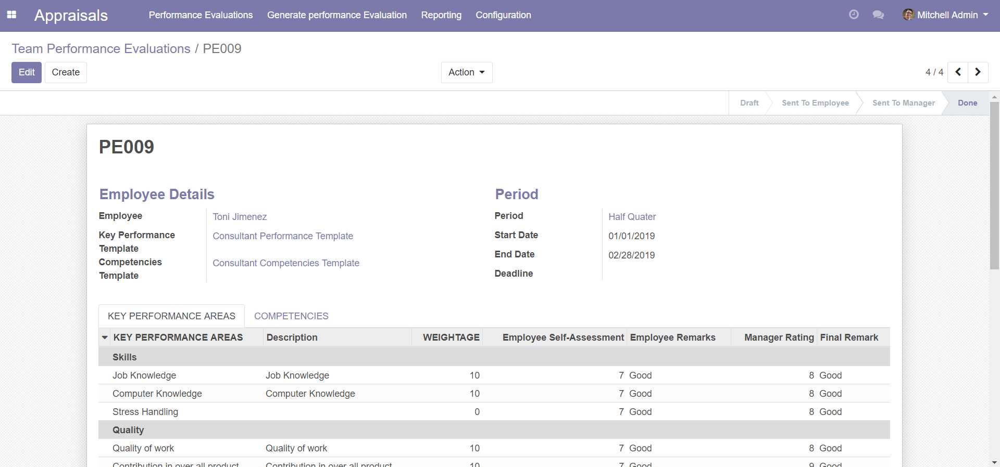
Batch Performance Evaluation:
In Generate performance evaluation menu, HR manager can create performance evaluation records in batch mode, you can add the employees by department, job position, manager, tags and many more options.
You will select the period of evaluation.
It will automatically bring the start date and end date based upon the configuration.:
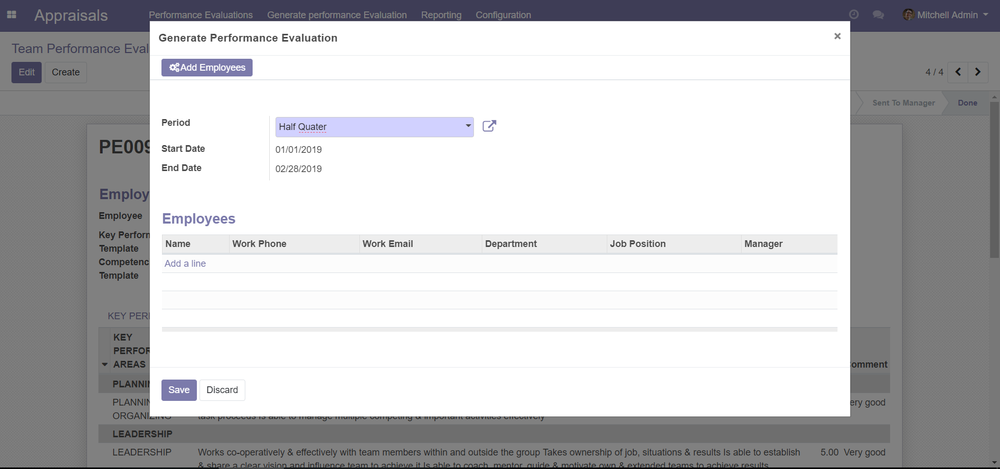
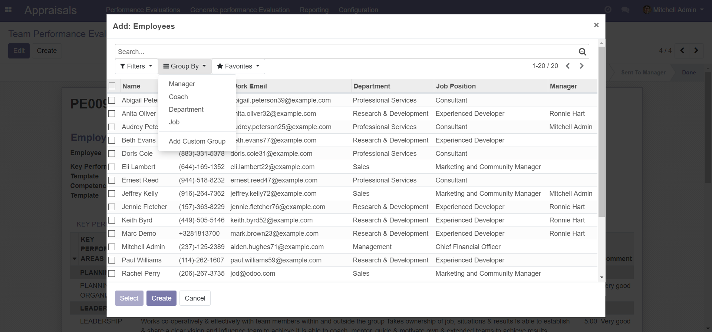
After adding the employees, you just need to click the add employees button then
it will generate the performance evaluation record for all selected employees:
Reporting:Key performance report:
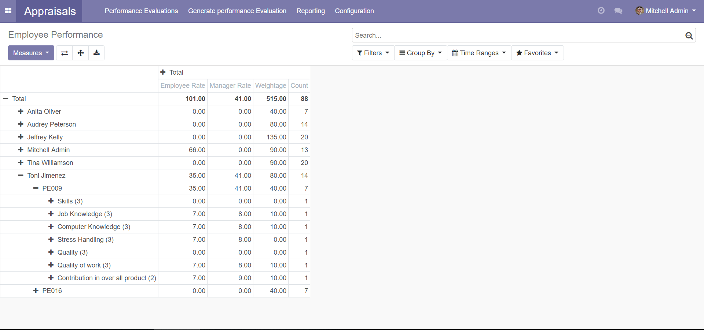
Competencies Report:
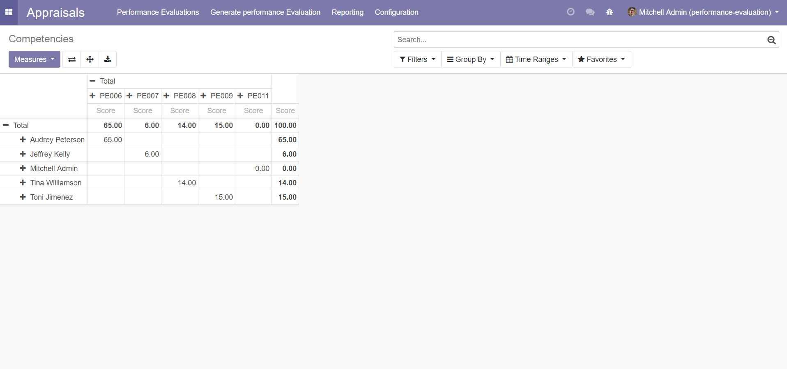